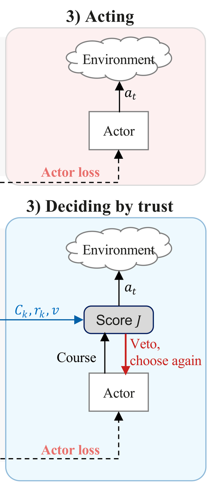

A readout taken off a world model's prediction reports confidence exactly where the model has no experience. LucidWM learns doubt from experience, carries it as trust through imagination, and acts on it.
Against seventeen uncertainty readouts on four world-model bases, LucidWM ranks first on every base after observation and first on all 16 rows before a decision, with no additional parameters or forward passes for uncertainty estimation.
Across 38 training checkpoints, from 0.1M to 3.8M frames, the doubt ranks the opened room above familiar frames at every one; the base's readout ranks it below chance at every one.
The problem
Same prediction, different experience
A state and an action may each be familiar while their combination is unsupported by observed transitions. The model can still produce a sharp prediction, so a readout of predictive spread may report confidence despite limited evidence for that transition. As a lucid dreamer knows a dream from waking life, LucidWM distinguishes what it predicts from the evidence supporting that prediction.
Same prediction, different experience. Top: a scene and an action never experienced together are predicted as sharply as a pair that was (real frames: at a fall's onset, and 30 steps before it). Bottom: ours reads the Dirichlet behind the input, whose strength and doubt separate the two; the entropy of the output cannot. Bars: each readout over its own alarm line.
Method
Doubt is learned from experience and carried as trust
The transition-head logits parameterise a Dirichlet over the next-state probabilities. Its mean gives the prediction, its concentration above the prior represents learned evidential strength, and the prior's share of the total concentration defines the step's doubt. A standard world model is the special case with doubt and trust pinned to constants.
1) Learning doubt from experience. Top: standard; bottom: LucidWM.
2) Carrying trust through imagination. Top: standard; bottom: LucidWM.

3) Deciding by trust. Top: standard; bottom: LucidWM.
(a) A standard world model; (b) LucidWM. Changes in grey and blue, doubt in orange. One rule is applied three times: keep the share of a prediction that experience supports, and hand the rest to a fallback, the uniform distribution, the critic, or zero.
Videos
The model doubting its dreams, and acting on it
LucidWMthe comparison named in each captionalarm line, one per curvealarm: the doubt has held above its line for three steps
Every readout is read on the same frames and imagined futures and set against its own alarm line, taken on familiar frames of the same run. Maze walks are scripted routes that read the agent's position only, never the model. Base is the same readout on the unmodified model; in the veto clip, the same agent ignoring doubt.
The same weights and seed, twice through a dead end repainted after training (sand). Left, base ignores its doubt; right, ours acts on trust. At step 24 the veto fires: ours turns and reaches the armour at step 190, while base circles the room until step 262 and arrives at step 362.
Details
Every wall is where it was, so a policy that learned the map walks in as before. The entropy of base crosses its line for a single frame in the whole walk, so the same rule would never have fired. On both altered maps, 143 of 145 vetoes fired inside a changed room, though the agent is never told where the changes are.
Before the fall
The doubt is read from the same head that generates the model's imagination, with no added parameter; the usual readout, the entropy of the prediction, is the comparison.
Eight steps ahead of the fall
The model reports its doubt eight steps before the fall and stays above its alarm line throughout it; the entropy of the same prediction raises no alarm.
Twenty falls, twenty alarms
The doubt warns of each of twenty consecutive cheetah falls before it begins, its alarm a median of four steps ahead, while the entropy of the same prediction raises none. Each fall is aligned at its onset; a tile turns red when its alarm is raised.
After observation: the world has changed
After training, the walls of one room are repainted, which changes every pixel and nothing else, and a wall is opened onto a room that was sealed off, which changes only the layout. LucidWM raises an alarm in both rooms, and the base in neither.
Every pixel changed
Inside the repainted room the doubt of LucidWM rises far above its alarm line; the base raises no alarm (inset: the room at training time).
Only the layout changed
Every frame in the opened room is made of familiar walls, yet the doubt rises while the opening is in view; the base raises no alarm.
Details
We replay the same actions on the training map and read the difference. The doubt reads the structure beneath the pixels.
Into the new room, and into it again
The doubt peaks each time the agent walks in. Over 29 walks it raises its alarm inside the room on 25, and the base on none.
Details
The doubt drops back below its line between the two entries shown. Steps outside the room play five times faster.
One pass against three models
On ten further walks through the door, one forward pass raises its alarm on eight; the deep and self-ensembles and the entropy on none.
Details
At the cost of one forward pass the doubt ranks the new room above the maze, while the base's latent and deep ensembles, at up to three times the cost, read it as more familiar.
Four bases, four alarms
On all four bases the doubt crosses its line at the new room. DreamerV3, R2-Dreamer, EMERALD and OC-STORM span recurrent and transformer dynamics, reconstruction-based and reconstruction-free representations, and flat and spatial latent states.
Nightfall in Crafter
Nightfall darkens Crafter step by step. Within twenty-five steps the doubt climbs over its line and peaks above twice it, while the base's readout never reaches half of its own.
Before a decision: the dream has drifted
Imagination starts from real states, and the question is whether the doubt read before a decision tells that an imagined future has left the model's experience. With the actions fed to imagination corrupted, the LucidWM readout rises and leads on every row, while the same formula on the unmodified base mostly falls or stays flat: fed nonsense, a model without doubt grows more confident.
One pass against twenty
On EMERALD walker and cheetah, with every imagined action corrupted, the doubt rises over threefold from one pass, where MC dropout, Laplace and a snapshot ensemble, at up to twenty passes, fall instead.
Details
Each curve is the lift, the readout under corrupted actions over the readout under the true ones, so 1 is no response.
The worse the actions, the higher the doubt
On OC-STORM, as more imagined actions are corrupted, the median doubt rises over fivefold on walker and over twofold on Crafter, while the base's readout barely moves.
Details
The actions fed to imagination are replaced by random ones with a growing probability, from 0 to 1 along the axis; each curve is the lift, so 1 is no response. The small frames are decoded imagination.
Leaving the experienced states
Rollouts of both models drift equally far out of the experienced states. Within ten steps the median doubt of LucidWM crosses the 95th percentile of experienced states, and by the end nine in ten sit above it; the base's doubt never moves.
Details
Forty-eight random-action rollouts from real states, forty steps each (grey cloud: experienced states); a rollout turns red while its doubt is above the line.
Imagination beside the world
One action sequence drives both the world and the model's imagination. On Crafter, lava appears in the real world from the second step and never in the dream, and the trust of this rollout drains far faster than that of rollouts started in calm scenes: 0.16 against 0.42 at step 6.
Details
Left: the imagined walker falls while the real one keeps walking. Right: the trust of this rollout against the median over thirty calm starts.
Doubt falls as experience grows
Learning more, doubting less
The same future imagined at six checkpoints of one run, from 48k to 180k steps. Averaged over the 24 imagined steps, the doubt falls at every checkpoint, to about half, and the error falls with it, to about a quarter, while the entropy of the same prediction ends nearly 30% higher.
Details
At every checkpoint the imagined future is compared with what happened: the error from pixels, the doubt from the transition's evidence alone. At one step the doubt halves and the error falls nearly 25-fold. Past the chaotic horizon the doubt stays the highest of the steps shown at every checkpoint.
Abstract
World models enable agents to learn and plan in imagination, but predictions beyond their experience can become unreliable and mislead decisions. Existing uncertainty estimates derived from predictions can remain overconfident on unfamiliar state-action pairs. We propose the Lucid World Model (LucidWM), which learns doubt from experience and propagates trust through imagination. By integrating Subjective Logic into categorical latent transitions, LucidWM distinguishes predicted outcomes from their evidential support and assigns each transition a degree of doubt. The complement of this doubt defines transition-level trust, which accumulates multiplicatively along imagined trajectories to reweight returns for policy learning and guide action selection. Uncertainty estimation requires no additional parameters or forward passes. Evaluated on four base world models against seventeen uncertainty readouts, LucidWM detects environmental changes and signals uncertainty during action-corrupted rollouts.
In a controlled navigation case study, acting on trust reduces the number of steps required to reach the goal from 362 to 190. Fifteen demonstration videos show how LucidWM doubts its dreams and acts on that doubt.
Citation
BibTeX
@article{lucidwm2026,
title = {Lucid Dreaming for World Models: Learning to Doubt
Imagination and Decide by Trust},
author = {Wen, Ziqi and Xu, Ting and Wang, Lianyu and Lin, Xian and
Meng, Yanda and Fu, Huazhu and Wang, Meng and Cheng, Ching-Yu},
journal = {arXiv preprint arXiv:2609.37156},
year = {2026}
}
The entry will be completed with the authors and the arXiv identifier once the paper is posted.